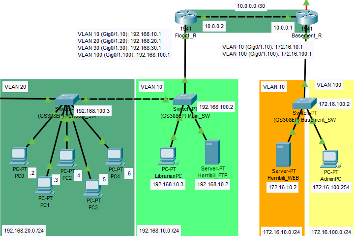

Hálózatépítés (Kicsi)
Egy kicsi hálózat megtervezése és megvalósítása. A hálózati terv a következő elemeket tartalmazhatja:
- 1 router
- 3 managed switch
- 10 konfigurálandó klines
- 1000 méter UTP kébelezés

Megrendelés
Hálózatépítés (Közepes)
Egy közepes hálózat megtervezése és megvalósítása. A hálózati terv a következő elemeket tartalmazhatja:
- 2 router
- 6 managed switch
- 40 konfigurálandó klines
- 2 szerver
- 6 access point
- 5000 méter UTP kábelezés

Hálózatépítés (Nagy)
Egy nagy hálózat megtervezése és megvalósítása. A hálózati terv a következő elemeket tartalmazhatja:
- 6 router
- 12 managed switch
- 100 konfigurálandó klines
- 8 szerver
- Távoli telephelyek közti összeköttetés
- 20 access point
- Korlátlan UTP kábelezés
- Optikai kábelezés

Pentagon szintű Hálózatépítés
A Horribili Kft. különleges ajánlata azoknak az ügyfeleknek akik a legnagyobbat, a leggyorsabbat, és a legbiztonságosabbat akarják. Ennek az ajánlatnak nincsenek korlátai, rendelést csak hosszas konzultáció után tudunk fogadni
Megrendelés